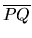

| Polygon Visibility |
As a building block of a new graphic tool, a visibility function has to be designed: Given two convex polygons, it is necessary to identify the set of points in the plane from which the visibility of the second polygon is obstructed by the first one. More precisely, you are looking for the points P, not in the interior of the first polygon, for which there is a point Q in the second polygon such that the interior of the line segment  contains some point of the first polygon. Your task is to write a program that implements that building block.
You may assume that the two polygons have no common points and that neither one is degenerate.
The set of points from which the visibility is obstructed can be described by a finite set of finite segments together with two infinite lines. Remember that the points in the interior of the first polygon are not included in the set of points from which the visibility is obstructed.
The vertices of each polygon appear in clockwise order. The input file ends with a line containing 0 0 and should not be processed.
Each line and each vertex must appear in a separate line of output. Each infinite line must be represented by the slope of the line, rounded to three digits to the right of the decimal point. If the line is vertical, the word VERTICAL must replace its slope value. Each vertex must be represented with its coordinates, separated by a space. To avoid ambiguity, the vertices must be given in clockwise order with respect to the first polygon.
3 3 10 20 20 20 20 10 10 10 7 5 5 7 4 3 20 19 25 15 20 10 15 15 10 20 10 10 5 15 0 0
Instance 1 VERTICAL 10 20 20 20 20 10 0.000 Instance 2 1.000 15 15 20 19 25 15 20 10 -1.000